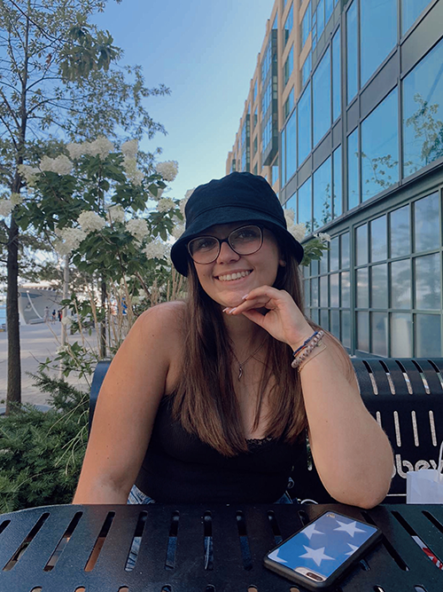

Hello, I’m Sydney – a second year student at Wilfrid Laurier University. I’m studying User Experience Design and am on track to graduate with a Bachelor of Design, and a minor in Psychology. I am currently employed at my local community centre, where I work as a lifeguard and a swim instructor. I have worked there for over four years and as much as I love this job, I am extremely focused on my education. I was a part of my high school’s technology and design club for all four years, and was a crucial member in the creation of our school’s 2019-2020 yearbook. I am always interested in opportunities that allow me to grow and expand on my creativity and design skills.
